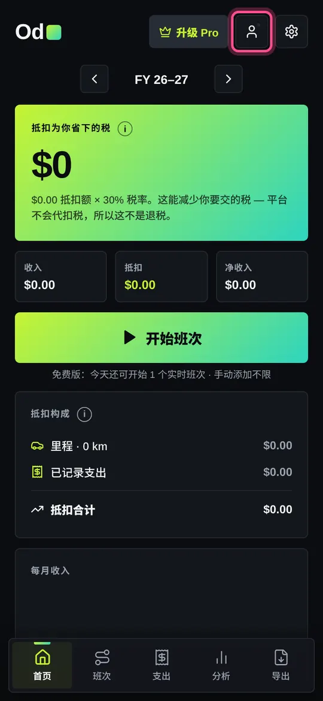
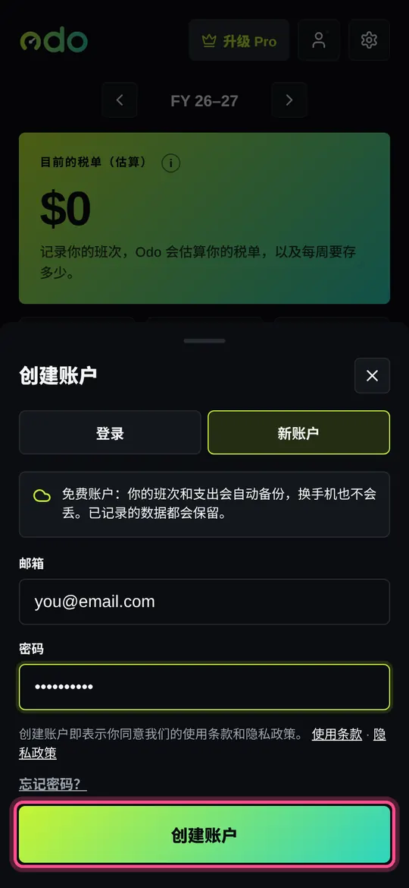
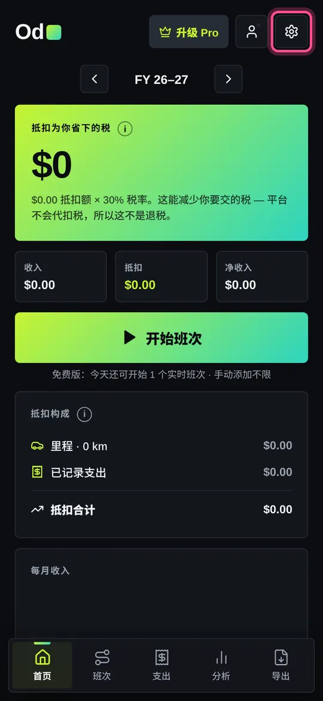
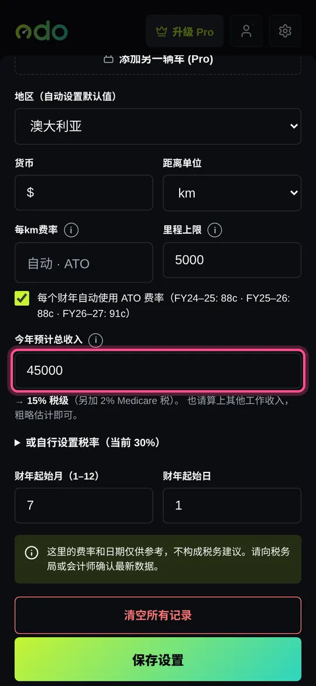
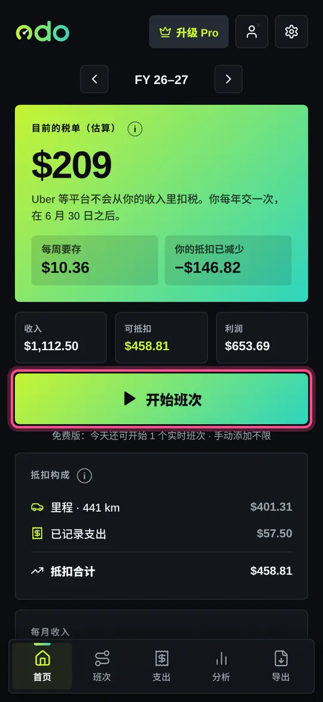
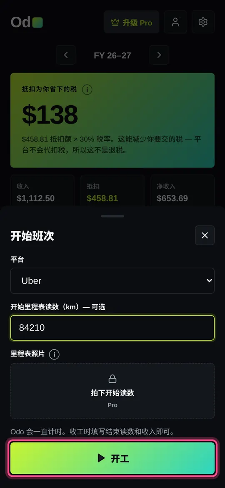
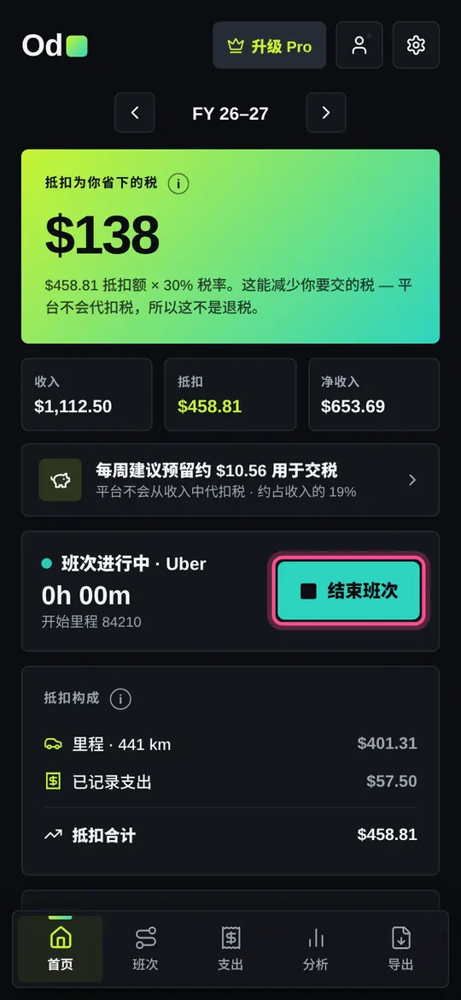
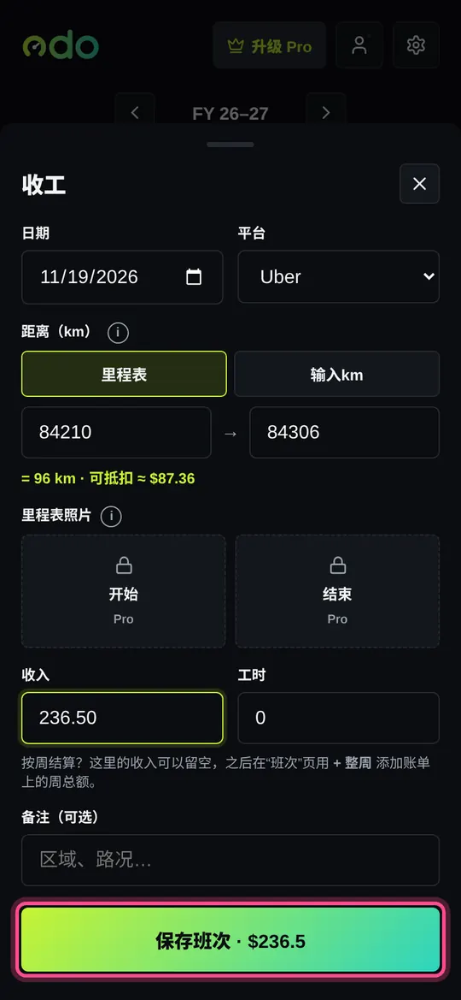
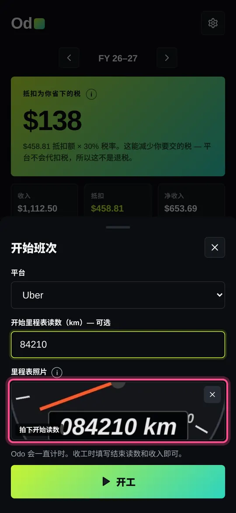

新手入门：8 步学会用 Odo
Odo 帮你记录外卖和网约车班次、工作行驶的公里数和工作开支。报税时，它会给你会计师或 myTax 需要的一切。设置只需大约 5 分钟。
打开 Odo →
你需要准备
- 一部能上网的手机（iPhone 或安卓）
- 一个电子邮箱
- 你的车的里程表读数（仪表盘上的公里数）
不需要去 App Store 或 Google Play 下载。Odo 通过链接打开，之后像普通 App 一样放在主屏幕上。可以 免费 使用。
1
打开 Odo 链接
在手机上打开 inova07.github.io/odo。
iPhone： 用 Safari（蓝色指南针图标）。安卓： 用 Chrome 或 三星浏览器（Samsung Internet）。
会出现一个简短的欢迎导览。先选择你的 语言，然后点 开始导览 或 跳过。
打开 Odo →
2
把 Odo 添加到主屏幕
只需做一次。之后点一下就能全屏打开 Odo，没有信号也能用。
- 点屏幕底部的 分享 按钮（一个带向上箭头的方框）。
- 向下滑，点 添加到主屏幕。
- 点右上角的 添加。
- 以后就从主屏幕上新的 Od 图标打开 Odo。
安卓（Chrome）
- 点右上角的 ⋮ 菜单（三个点）。
- 点 安装应用 或 添加到主屏幕。
- 点 安装 或 添加。
- 从主屏幕上的新图标打开 Odo。
- 点右下角的 ≡ 菜单（三条横线）。
- 点 添加页面至，再点 主屏幕。
- 点 添加。
- 地址栏里有小小的 安装 图标？点它也一样。
💡 找不到按钮？ 那就把 Odo 加入书签。iPhone： 分享 → 添加书签。Chrome： ⋮ → 点 星形图标。三星浏览器： ≡ → 添加页面至 → 书签。
3
注册免费账户
没有账户时，你的记录只保存在这部手机上。注册后，Odo 会自动备份所有内容，换新手机登录就能全部找回。
- 点右上角的 人像图标。
- 点 新账户。
- 输入你的 邮箱，设置一个 密码（至少 6 个字符）。
- 点 创建账户。如果 Odo 提示确认，打开 Odo 发来的邮件点链接确认，然后登录。

1. 点人像图标
2. 新账户 → 创建账户💡 换了新手机？ 打开链接，点人像图标，选 登录，用同样的邮箱和密码。记录会全部回来。人像图标上的 绿点 表示已经备份。
4
告诉 Odo 你的情况（1 分钟）
- 点右上角的 齿轮图标，打开 设置。
- 你的车辆： 选择汽车、摩托车或自行车。
- 地区： 保持 澳大利亚 不变。
- 今年预计总收入： 大概估计今年所有收入，包括其他工作。Odo 用它来算出你的税率。
- 点底部的 保存设置。

1. 点齿轮图标
2. 填写预计收入💡 骑自行车或摩托车？ Odo 会切换到 骑手模式。按公里计算的标准只适用于汽车，所以你的抵扣来自实际开支：手机、维修、电池、外卖包和装备。
5
记录每一个班次
公里数通常是你最大的报税抵扣。每个班次只需点两下。
- 开始工作： 点 开始班次，选择平台（Uber、DoorDash…），输入 里程表 读数，点 开工。可以关掉 Odo，计时会继续。
- 收工： 点 结束班次，输入新的里程表读数和 收入，然后点 保存班次。

1. 点开始班次
2. 里程表 → 开工
3. 收工后：结束班次
4. 结束读数 + 收入 → 保存PRO给里程表拍照
使用 Odo Pro 时，开始班次时点 拍下开始读数 给里程表拍照，收工时再拍一张 结束 照片。每张照片都带日期和时间，和班次保存在一起，并备份到你的账户。
为什么重要： ATO 可能会要求你说明工作公里数是怎么算出来的，而且报税后记录必须保存 5 年。每个班次开始和结束时的照片是很有力、很难被质疑的证明。就算换手机，也不会丢失或记错读数。报税时，导出 → 下载照片 会把所有照片打包成一个 ZIP 交给你的税务代理。

里程表照片和班次保存在一起💡 忘了开始？ 在班次页点 + 班次，事后补录。按周结算？ 在班次页点 + 整周，抄下每周对账单上的总额。只有 工作 公里才算：从家到第一单的路程可能不算。
6
添加工作开支
- 进入 支出 页，点 添加支出。
- 选择 类别（例如手机和网络），输入 金额。
- 拖动 工作用途 滑块，设置有多少用于工作。手机 70% 用来送单？就设为 70%。
- 点 保存。
⚠️ 开汽车的话，不要添加油费、注册费（rego）、保险或保养。 ATO 每公里费率（2026–27 年度为每公里 91 澳分）已经包含这些。停车费和过路费可以添加。
7
看懂你的数字
| 抵扣为你省下的税 | 因为工作抵扣，你可以 少交多少税。这不是退税：App 不会从你的收入里扣税，所以你通常还是要交一些税。 |
|---|
| 收入 / 抵扣 / 净收入 | 你赚了多少、可以抵扣多少，以及大概的利润。 |
|---|
| 每周建议预留约 $… | 每周存下这么多，7 月的税单就不会吓你一跳。 |
|---|
💡 点任意 ⓘ 图标可以看到简单解释。
8
报税时：导出
- 6 月 30 日之后，打开 导出 页。
- 下载你的 班次、支出 和 汇总。可以用 Excel 或 Google Sheets 打开。
- 发给你的税务代理，或者在 myTax 里填写这些总数。
💡 年付 Pro 包含导出功能，也可以单独购买某一年的 报税包（A$14.99）。两者都可以作为工作开支抵扣。
需要帮助？
- 完整指南： 设置 → Odo 使用指南，或查看 在线指南。
- 有问题？ 设置 → 帮助与支持。如果你已登录，我们会直接在 App 里回复。
Odo 是记录工具，不是税务建议。请在 ato.gov.au 或向注册税务代理确认最新规定。 · 更新于 2026年11月17日